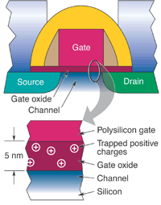
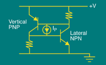
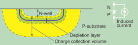

EFFECTS ON HARDWARE
Major Concerns
Two types of space radiation are of particular concern for spacecraft electronics designers. The first,
known as the total ionizing dose, represents the cumulative effect of many ionized particles hitting a
device throughout the course of its mission life, slowly degrading the device until it ultimately fails.
The second involves high-energy particles that penetrate deep into materials and components, leaving a
temporary trail of free charge carriers in their path. If these particles hit sensitive nodes in the circuit,
they can produce adverse effects, generically described as "single-event effects."
One type of electronic component often found aboard a satellite is the complementary metal-oxide semiconductor
(CMOS) integrated circuit. CMOS devices use the simultaneous flow of both electron and hole currents through
transistors and logic gates. The transistors that carry these negative and positive currents need to be
isolated from each other; this is where space radiation can interfere.
Total Dose Effects
Total dose refers to the integrated radiation dose that is accrued by satellite electronics over a certain
period of time, usually over a 1 year period, or over the satellite mission lifetime. The radiation has the
capability to damage materials due to its ability to ionize material. The energetic ions then can cause
damage to materials by breaking and/or rearranging atomic bonds. After exposure to sufficient total-dose
radiation, most insulating materials such as capacitor dielectrics, circuit-board materials, and cabling
insulators become less insulating or become more electrically leaky. Certain conductive materials, such as
metal-film resistors, can change their characteristics under exposure to total-dose radiation. Semiconductor
devices in particular exhibit a number of effects. It is important to choose materials and components for
satellite electronics that have the necessary radiation tolerance for the required mission. It is also
necessary to design in margins or allowances for the expected component changes induced by the radiation
environment.
Figure E8: Charge buildup affects the current-voltage characteristics of the
transistors used in semiconductor circuits. Proper operation of a transistor relies on the ability to
switch it from a low-conductance (off) state to a high-conductance (on) state as the gate voltage passes
through a threshold. Extended exposure to radiation can shift the threshold voltages (top image), making the transistors easier or harder to switch. Radiation may also increase the leakage current (bottom image), causing the on and off states of the transistors to become less distinguishable. Either effect can ultimately cause circuit failure.
As commercial CMOS processes have advanced, the inherent radiation resistance of these devices has improved—and
thus, the Rad Harden By Design (RHBD) approach has become possible. The current that flows through CMOS
transistors is governed by a low-voltage gate over each device, isolated by a layer of oxide. These insulating
layers can develop a charge after long exposure to ionizing radiation, and this charge can affect the flow of
current through the device; but as circuits have shrunk, the thicknesses of these insulating layers have
decreased, presenting less opportunity for charge buildup.
More problematic are the radiation-induced increases in leakage current—that is unregulated current flowing
across unintended areas of the semiconductor. When leakage current bypasses the transistor's isolated regions,
it degrades the distinguishability of the transistor's "on" and "off" states. Leakage also increases the
circuit's background current, or the amount of current flowing when the device is in a quiescent state.
Such an increase, multiplied by the tens of millions of switches in each circuit, can drive up power
consumption, increasing heat-dissipation needs and prematurely draining the power source of the satellite.
In an extreme case, the isolation between discrete components can also be lost, rendering the circuit useless.
First the gate oxide becomes ionized by the dose it absorbs. The free electrons and holes drift under the
influence of the electric field that is induced in the oxide by the gate voltage. These holes and electrons
would be fairly benign if they were to simply able to drift out of the oxide, but although the electrons are
fairly mobile, the holes are not. A small fraction of them become trapped in the gate oxide. After sufficient
radiation dose, a large positive charge builds up on this gate oxide, having the same effect as if a positive
voltage were applied to the gate. With enough total dose, the device turns on even if no control voltage is
applied. The transistor source-drain current can no longer be controlled by the gate and remains on permanently.
PMOS transistor experiences a similar but opposite condition where the state is trapped in a continuous off
state. The “ON” and “OFF” states in the digital world are “1” or “0” and with accumulated dose will cease to
function.
A similar effect can occur in a single transistor. Trapped charges in the field oxide form a leakage path along
the edges parallel to normal conduction flow in an NMOS transistor. The silicon along these edges forms an
unwanted conduction path. In modern CMOS devices, edge leakage is frequently the dominant mode limiting the
total-dose hardness of the product. After a high total dose, the transistors cumulatively leak so much current
that the power supply can no longer handle the load. The power dissipation rises to high levels, and the chip
fails. A hardened field oxide is usually required to help prevent this occurrence.

Figure E9: Figure: Cross section of an NMOS transistor showing the gate oxide and conducting channel formed between the
source and drain. The trapped charges shown in the inset are responsible for the threshold voltage shift,
ultimately leading to failure.
The Aerospace Corporation has been testing the total-dose hardness of various commercially available CMOS
manufacturing processes since 1995 by building test devices and irradiating them in a cobalt-60 radiation
chamber. For example, The Aerospace Corporation and other companies have shown that total-dose effects can
be mitigated by designing transistors in an enclosed shape, thereby eliminating the edges that can trigger
current leakage along the borders of conventional transistors. Current flows from the center to the outside
of these devices, making them immune to edge leakage current, but requiring a larger area for each transistor.
Many commercial products lacking a hardened gate oxide (such as the processors used in desktop computers)
might last a few days or weeks in a satellite orbit so this process would greatly benefit any space mission
in orbit around earth.
Figure E10: Edge-current leakage in transistors. Current should flow only between
the source and the drain when the gate receives a proper voltage; however, after extended exposure to
ionizing radiation, current can leak through at the edges, where the gate oxide and insulating field oxide
meet.
Single-Event Effects
Highly energetic ions such as cosmic rays can easily penetrate the structure of a spacecraft, pass through
internal components, and exit the structure in a straight line. This single particle impact is often called
a single-event effect. Shielding against them is simply not practical because of the ability for these
particles to penetrate material. Because the heavy particles are omnidirectional, they impinge on an integrated
circuit at random times and locations, with random angles of incidence.
The concept of total ionizing dose is not useful to describe a single particle; instead, a quantity called the
linear energy transfer is used. As the particle traverses the material of interest, it deposits energy along
its path. Linear energy transfer is the amount of energy deposited per unit of distance traveled, normalized
to the material's density. It is usually expressed in MeV-cm2/mg. A typical satellite environment will include
a wide variety of particles with various amounts of kinetic energy corresponding to a wide spectrum of linear
energy transfer.
An energetic ion passes through a semiconductor device in a few picoseconds. As it does so, it leaves behind a
"track" or column of ionized material typically ranging from a few tenths of a micron to a few microns in
diameter. The ionized track contains equal numbers of electrons and holes and is therefore electrically neutral.
The total number of charges is proportional to the linear energy transfer of the incoming particle. It is as if
a conducting wire were suddenly inserted into the semiconductor device, disturbing the electric fields and
normal current paths.
If a cosmic ray passes through the drain region of an NMOS transistor, a short is momentarily created between
the substrate (normally grounded) and the drain terminal (normally connected to a positive power supply voltage).
If this happens, a spike of current flows for an instant at the event site. The amount of charge that is
"collected" from the ion track before it dissipates or disappears by recombination is significant: Every
device has a certain critical charge, which, if exceeded, results in a single-event upset, burnout, or other
undesirable phenomenon.
The process of energetic-ion-induced charge collection is complex and rapid, and is not completely understood.
It consists in part of charge "funneling," where distortion of the normal electric field patterns of a device
allows more charge to be collected than could normally be transported into the sensitive region. Charges are
also pulled away from the drain-substrate junction by diffusion. The ability of a device to collect charge
from the ion track determines its sensitivity to cosmic rays.
If a device is large, it presents a greater target for cosmic rays. It is therefore more likely to receive a
"hit" than a smaller device. In determining the sensitivity of a device to single-event effects, two important
parameters to consider are the threshold linear energy transfer, above which upsets or single events are seen,
and the saturation cross section. Researchers have identified various types of single-event effects, varying in
their degree of seriousness.

Figure E11: Latchup occurs when the source of one MOS transistor forges a pathway to the drain of another. A transient
radiation pulse can generate the current needed to bridge this gap. Current will then continue to flow
unregulated between the two components. The entire circuit must be powered down to break the connection.
In some cases, the circuit may be permanently damaged.
A single-event transient, for example, is a temporary spike or signal caused by a heavy ion. In some cases,
this spike can excite analog circuits into temporary or permanent oscillation. In digital circuits, the spike
may propagate through many logic gates, causing system malfunction. In mixed-signal devices, a transient
generated in the analog part of the device can propagate into the digital part, causing logic-level shifts.
A single-event upset usually manifests itself as a "bit-flip" or change of state in a logic circuit. If enough
of these upsets occur, or if a single critical node is affected, a computer can freeze up and must be rebooted.
Single-event upsets occur in computer memories, microprocessors, controllers, and almost any digital circuit
containing latches or memory elements.
Single-event latchup is triggered when a heavy ion causes current to flow unregulated between components on
an integrated circuit. When PMOS and NMOS transistors are integrated into the same area of a silicon substrate,
they can form a parasitic or undesired circuit element (called a thyristor) if struck by an energetic ion. A
thyristor is an interconnected n-p-n and p-n-p bipolar transistor; the current amplified by the n-p-n transistor
supplies the p-n-p transistor, which in turn supplies it back to the n-p-n transistor, creating a feedback loop.
When an energetic particle traverses the region of a CMOS integrated circuit containing the parasitic
transistors, it can generate enough current to trigger the thyristor, if this happens the effected portion of
the CMOS integrated circuit will be driven into what is called “latchup.”

Figure E12: Current is generated in a p-n junction exposed to transient radiation. It can be modeled as a
transient current source in parallel with a diode.
As long as the power supply maintains the voltage equal to or greater than the thyristor "holding" voltage,
the latchup condition remains. The entire integrated circuit must be powered down to correct the condition.
In many cases, the current is sufficient to burn out the transistors or metallization in the latchup path,
permanently damaging the circuit (a phenomenon known as single-event burnout). The outcome depends on the
circuit design, the geometry, and the presence of any current-limiting resistances. This serious problem makes
it very difficult to use most commercial integrated circuits in an environment where heavy-particle radiation
may be encountered. Bipolar integrated circuits are particularly sensitive to latchup.
Other single-event phenomena are even more complex. For example, in certain MOS transistors, the gate oxide
can be ruptured by the passage of a cosmic ray. While not completely understood, this so-called single-event
gate rupture may be caused by a combination of charge-multiplicative breakdown and injection of charges into
the gate oxide.
Neutron or Proton Damage
When highly energetic neutrons or protons penetrate the crystal lattice of a semiconductor, such as silicon,
atoms can get displaced through several mechanisms. For example, the incident particle can transfer some of
its energy to the silicon nucleus, and if enough energy is transferred (approximately 25 electron volts), the
nucleus gets knocked out of position. This is called elastic scattering, and the freed silicon atom can lose
energy through ionization or by displacing other atoms. Inelastic scattering can also occur, where the struck
nucleus absorbs the neutron or proton and then reemits it at a lower energy along with a gamma ray. The
displacements caused by this process are essentially microscopic crystal imperfections that interfere with the
orderly flow of charges from the source to the drain.
The resulting crystal lattice contains voids where the silicon atoms were knocked out of position and clusters
where they came to rest. These sites, known as traps or recombination centers, respectively, can be a source of
problems in some semiconductor devices. For example, a bipolar-junction transistor functions as a current
amplifier. A p-n junction is the place where a p-type material meets an n-type material. There are two types of
bipolar-junction transistors—n-p-n and p-n-p—which are created by sandwiching semiconductor of one
doping type between two other layers of the opposite type.
The principle of operation of bipolar transistors is by charge-carrier diffusion, which is different from the
MOS transistor, whose principle of operation is by drift. In an n-p-n bipolar transistor, electrons are emitted
by the emitter n-type layer into a middle material known as the base, where they diffuse to the collector n-type
layer at the opposite side. If the transistor were perfect, all the electrons that traverse the middle material
would be collected. In actuality, some are lost through recombination with holes. The transistor gain is
therefore defined as the amount of current that reaches the collector compared with the amount that recombines
with the base.
Figure E13: Operation of a bipolar junction transistor. Electrons are emitted at one end, diffuse through the
middle material (the base), and are eventually collected. If the transistor were perfect, all the emitted
electrons would be collected; however, some are lost through recombination with holes in the base.
When the transistor is exposed to neutrons or protons, displacement damage and new recombination centers are
created. This increases the likelihood that electrons will recombine with holes in the base material. Higher
neutron or proton fluxes give rise to higher rates of recombination and lower transistor gain. Eventually,
the transistor fails because its gain drops too low to provide amplification. This is the dominant failure
mode in bipolar integrated circuits.
Bipolar-junction transistors are also sensitive to total ionizing dose. The phenomenon is similar to that
observed in MOS transistors, where an unwanted conducting channel is formed adjacent to the surfaces of the
field oxide. These channels cause unwanted current that can eventually cause device failure. Similarly, MOS
transistors are somewhat sensitive to displacement damage. Some of the charges are scattered by the damage
sites, and the transistors exhibit a loss of conductance and an increase in noise. These degradations are
themselves capable of causing circuit failures.

{kind=link}
{kind=link}
{kind=link}